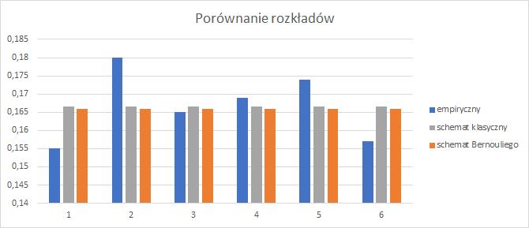
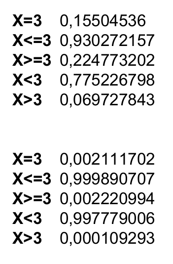

Odpowiedzi do laboratorium nr 1.
Odpowiedź do zadania 1.c
Wykres - porównanie rozkładów / rzut jedną kostką

Odpowiedź do zadania 2.c
Wykres - porównanie rozkładów / dwa razy rzut kostką

Odpowiedź do zadania 3
Kalkulator rozkładu dwumianowego

Odpowiedź do zadania 4
Kalkulator rozkładu Poisoona
a) 0,1353 b) 0,2707 c) 0,4060 d) 0.8647